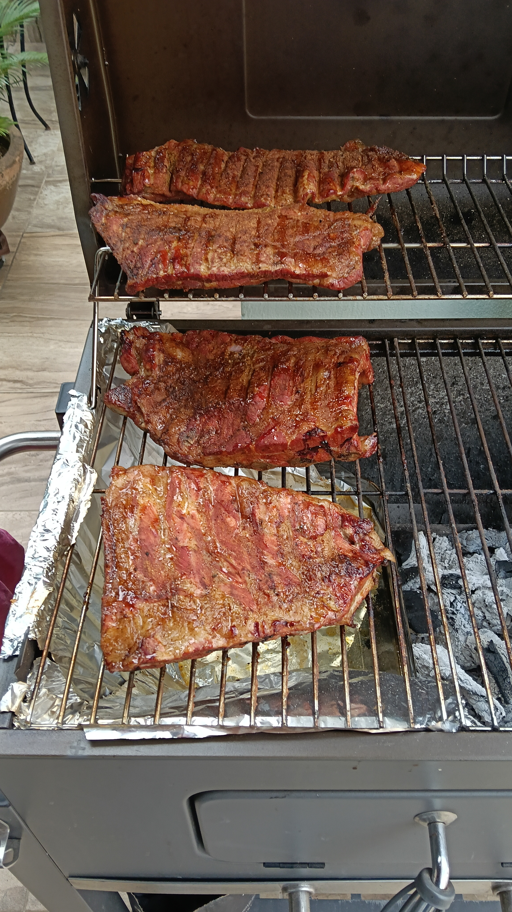
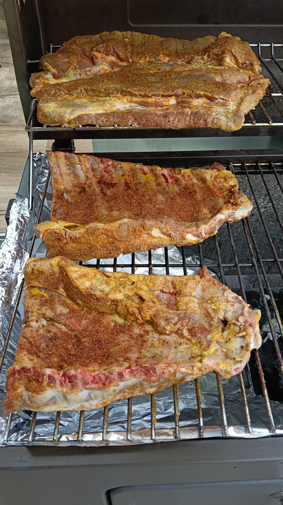
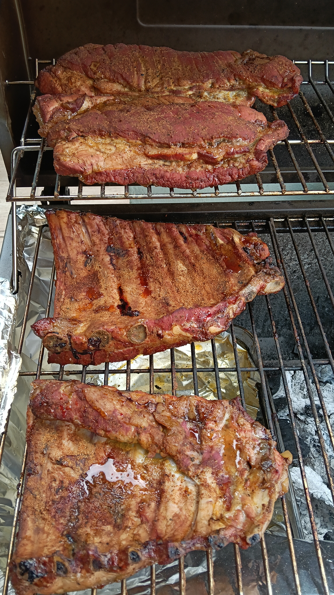
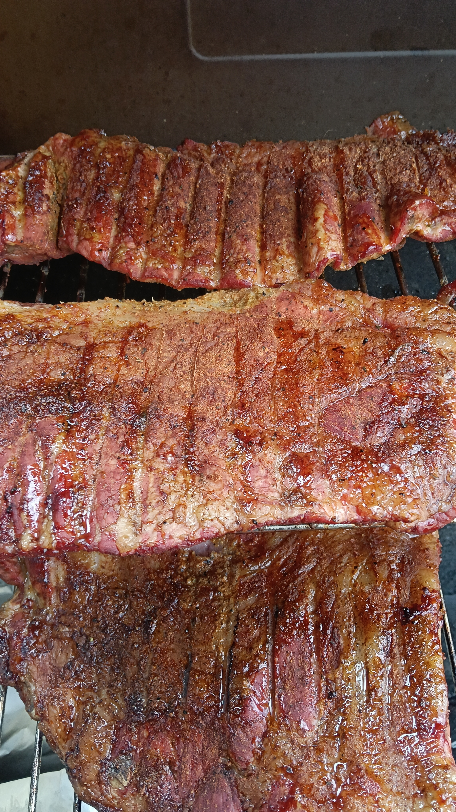
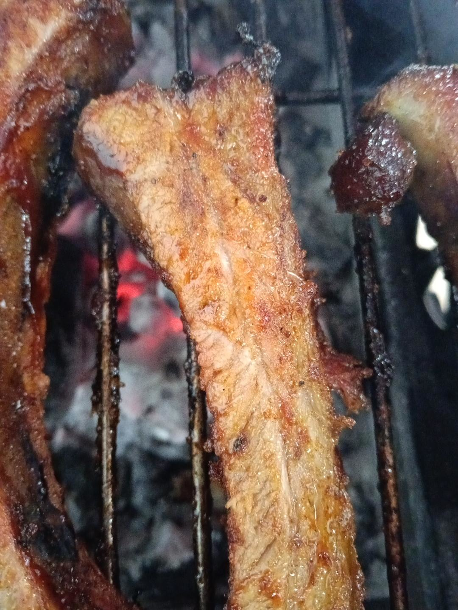
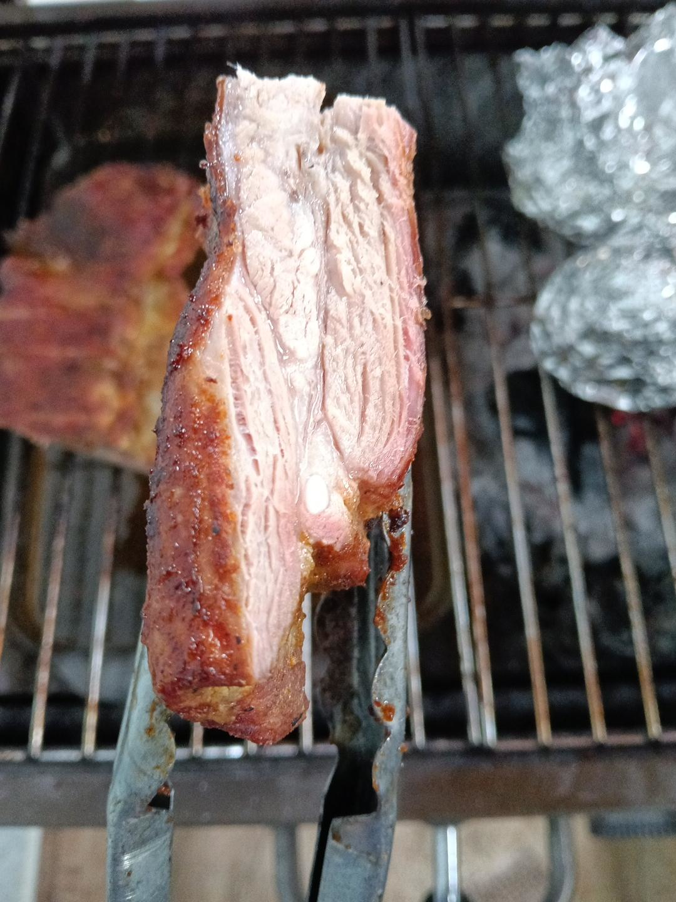

EXP-002 · Fase I documentada
Costilla y aldilla de cerdo — humo ligero y acabado dual
Ensayo con manzano, rub sin azúcar, fase húmeda en aluminio con vino blanco y acabado natural/BBQ. El seguimiento de conservación y regeneración térmica queda abierto.
Fase I completada- Fecha
- 18 octubre 2026
- Inicio
- 10:45 h
- Corte
- Costilla + aldilla/suadero
- Peso inicial
- 4.5 kg

Resumen ejecutivo
Una pieza de costilla de cerdo con aldilla/suadero, 4.5 kg en total, se dividió en dos secciones de costilla y dos piezas de aldilla. Se cocinó inicialmente a 150 °C con humo de manzano. A las 13:00 h, las aldillas registraban aproximadamente 70 °C y las costillas 78 °C; con el rub ya fijado, las cuatro piezas se envolvieron individualmente en aluminio con aproximadamente 100 mL de vino blanco por paquete.
La fase final tuvo que acelerarse por el horario de servicio. Parte del producto se terminó natural y parte con una capa fina de BBQ sobre calor directo. La evaluación sensorial fue alta, aunque tres observaciones independientes señalaron heterogeneidad localizada de terneza o sequedad. Una porción de aldilla mantenida posteriormente 20–25 min adicionales a fuego directo bajo se percibió más tierna sin perder jugosidad, lo que sustenta la hipótesis de que el ensayo habría mejorado con más tiempo de cocción.
Objetivo e hipótesis
Objetivo
Obtener costilla y aldilla de cerdo con humo perceptible pero no dominante, bark ligero, buena jugosidad y dos acabados de servicio: natural y BBQ.
Hipótesis de trabajo
Un rub ligero sin azúcar, humo moderado de manzano y una fase envuelta con humedad permitirían conservar el protagonismo de la carne y producir una textura tierna sin necesidad de un bark pesado.
Material cárnico y tratamiento previo
- Presentación
- Costilla con aldilla/suadero
- Peso
- 4.5 kg
- División
- 2 secciones de costilla + 2 piezas de aldilla
- Binder
- Mostaza amarilla
- Madera
- Manzano; aproximadamente medio trozo de ~10 cm de diámetro
- Temperatura inicial de cámara
- 150 °C
Rub ligero
Formulación aplicada al lote de 4.5 kg: 45 g de sal, 25–30 g de pimienta negra gruesa, 18–20 g de ajo en polvo, 10–12 g de cebolla en polvo, 10–12 g de paprika y 4–5 g de orégano mexicano. Sin azúcar y sin comino.
El objetivo no fue construir un bark americano grueso o dulce, sino una corteza ligera que acompañara al cerdo. En la evaluación del operador, el rub y el acabado exterior obtuvieron 10/10 y no requieren aumentar intensidad.
Configuración y decisiones térmicas
El ahumador se trabajó en dos niveles: las secciones gruesas de costilla se colocaron abajo y las aldillas arriba. Esta configuración coincidió con una mayor temperatura interna de las costillas a las 13:00 h, pero anatomía y posición quedaron confundidas y no permiten atribuir causalidad a un solo factor.
Al envolver, cada paquete recibió aproximadamente 100 mL de vino blanco. El aluminio sellado cambió el sistema hacia un microambiente húmedo, con vapor y condensación interna. Posteriormente, ante la necesidad de acelerar el servicio, los paquetes cerrados se acercaron a calor directo para aumentar el flujo térmico.
Línea de tiempo
| Hora | Tiempo | Cámara | Interna | Acción / observación |
|---|---|---|---|---|
| 10:45 | 0:00 | 150 °C | — | Inicio. Costillas abajo; aldillas arriba. Humo de manzano. |
| ≈13:00 | 2:15 | ≈150 °C | Aldilla ≈70 °C; costilla ≈78 °C | Rub fijado, superficie rojiza/café y grasa en renderizado. Fin de la fase principal de humo. |
| ≈13:00 | 2:15 | — | — | Envoltura individual en aluminio + ≈100 mL de vino blanco por paquete. |
| ≈14:15 | 3:30 | 135–150 °C | Aldilla ≈78–80 °C | Continúa fase envuelta; se recupera cámara a 150 °C. |
| Posterior | — | Calor directo | Una pieza ≈88 °C | Paquetes cerrados pasan a calor directo para acelerar cocción. |
| Servicio | — | Directo breve | — | Mitad natural; mitad con capa fina de BBQ hasta burbujeo, brillo y fijación. |
| Post-servicio | +20–25 min | Directo bajo | — | Porción de aldilla mantenida a fuego bajo: exterior más tostado, interior jugoso y mayor terneza percibida. |
Registro fotográfico
Las imágenes actuales son marcadores temporales. Al incorporar las fotografías originales, basta sustituir cada PNG conservando exactamente el nombre y la ruta.





Resultados
El humo de manzano quedó perceptible sin dominar. El bark ligero cumplió el perfil buscado y el sabor general fue el atributo más consistente del panel. La aceleración final permitió cumplir el servicio, pero probablemente limitó la uniformidad de ablandamiento entre zonas.
Evaluación sensorial
Panel familiar no entrenado (n=4), escala hedónica 1–10; intensidad de humo categórica y preferencia de acabado. No pretende inferencia estadística poblacional.
| Atributo | Media |
|---|---|
| Terneza | 8.50 |
| Jugosidad | 9.25 |
| Sabor general | 10.00 |
| Aroma ahumado | 9.75 |
| Corteza/acabado | 10.00 |
| Evaluación global | 9.25 |
Los cuatro evaluadores calificaron la intensidad de humo como adecuada. Elizabeth, Adilene y Emiliano aceptaron ambos acabados por igual; Jorge disfrutó ambos, con preferencia cualitativa por BBQ por considerar que asienta y complementa los sabores del cerdo.
Elizabeth: “Fue algo muy delicioso. El sabor, la sal, todo estuvo muy rico. El humo hacía que fuera más exquisito el sabor y las costillas estuvieron muy, muy deliciosas. No cambiaría nada; a lo mejor, un pedacito de aldilla que me tocó seco, pero los demás estuvieron muy ricos.”
Adilene: “Considero que la experiencia de comer estas costillas fue una experiencia muy grata debido al sabor y la textura que tenían. Probablemente algunos pedazos sí estaban un poco secos y, aparte, no me gustan los gorditos, pero se los quité. El humo olía bien y la carne también olía bien. Estaba muy bueno.”
Jorge: “Lo que más me gustó fue el sabor. Para una próxima cocción aumentaría el tiempo. El resultado general me parece muy bueno; considerando el tiempo disponible y que tuvimos que acelerar la cocción, creo que estuvo bien.”
Emiliano: “Me gustó la textura y la jugosidad. Para una próxima vez cambiaría la cocción para que fuera un poco más suave al morder. En general, la carne está muy buena, con buen olor y buena textura.”
Smoke Science · lo que deja este ensayo
Transferencia de calor. Convección, radiación y conducción actúan simultáneamente; un termómetro de tapa no representa necesariamente el microambiente de cada parrilla. La geometría, hueso, grasa, agua y tejido conectivo también modifican la velocidad de calentamiento.
Humo y bark. La deposición de compuestos del humo es más relevante durante la fase descubierta. Al envolver se reduce prácticamente la deposición adicional y domina un ambiente húmedo que favorece transferencia térmica y ablandamiento.
Vino en aluminio. En un paquete sellado hay evaporación interna, pero poca pérdida neta al ambiente: el vapor puede condensarse y reciclarse dentro del paquete.
Smoke ring. En varios cortes se observó una banda rosada periférica compatible visualmente con un smoke ring. La fotografía no demuestra por sí sola el mecanismo. Químicamente, especies nitrogenadas de la combustión pueden interactuar con la mioglobina y estabilizar pigmentos rosados antes de su desnaturalización térmica. El smoke ring no mide directamente la intensidad del sabor ahumado.
Acabado BBQ. El burbujeo y brillo observados durante el acabado corresponden a concentración/deshidratación de la salsa, junto con caramelización y, según composición y temperatura superficial, reacciones de Maillard.
Coming up · esta historia continuará
En la continuación se registrarán fecha de congelación, tiempo de conservación, método de descongelación, tiempo/temperatura de regeneración, desarrollo de costra y una nueva evaluación sensorial.
Interpretación provisional
EXP-002 alcanzó con claridad el perfil aromático y de sabor buscado: humo moderado, rub ligero y acabado exterior muy bien aceptado. La señal repetida en la evaluación fue de textura: algunas zonas podían ganar suavidad. La observación post-cocción apunta a que el factor de mejora más plausible es disponer de más tiempo, pero la Fase II será necesaria para evaluar esa hipótesis en las piezas reservadas.